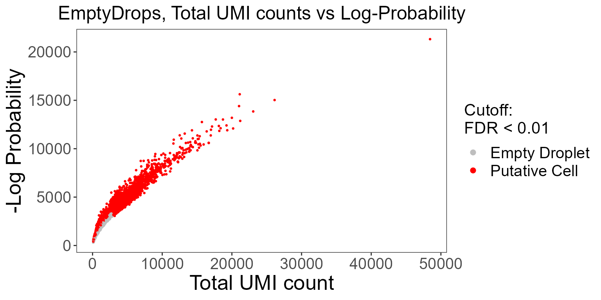
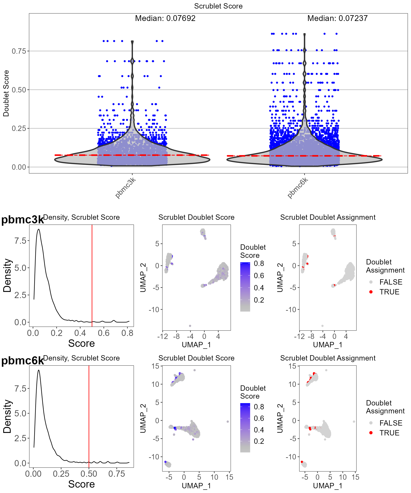
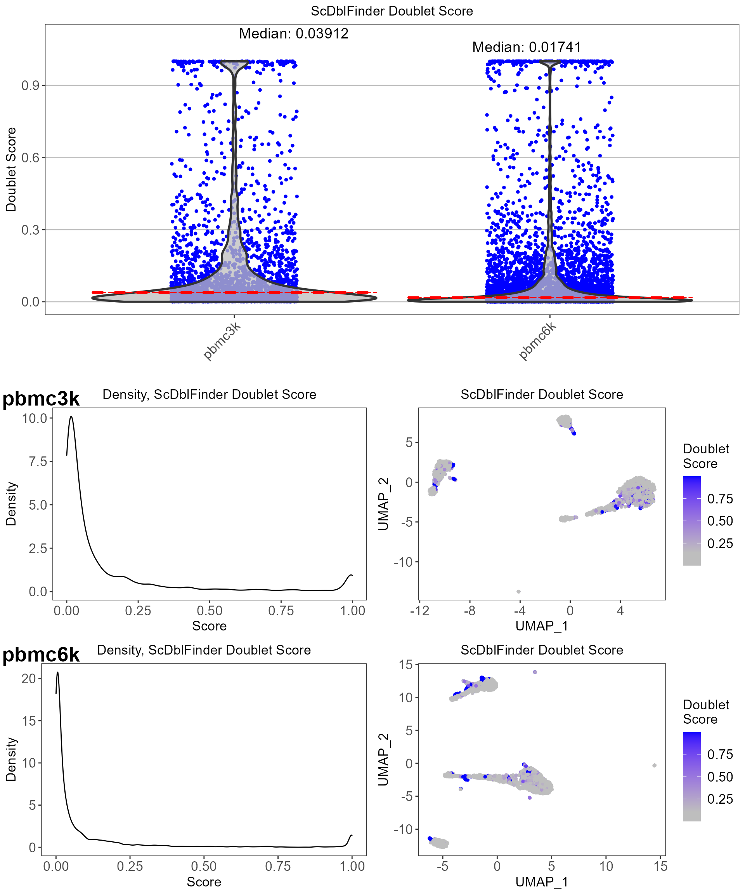
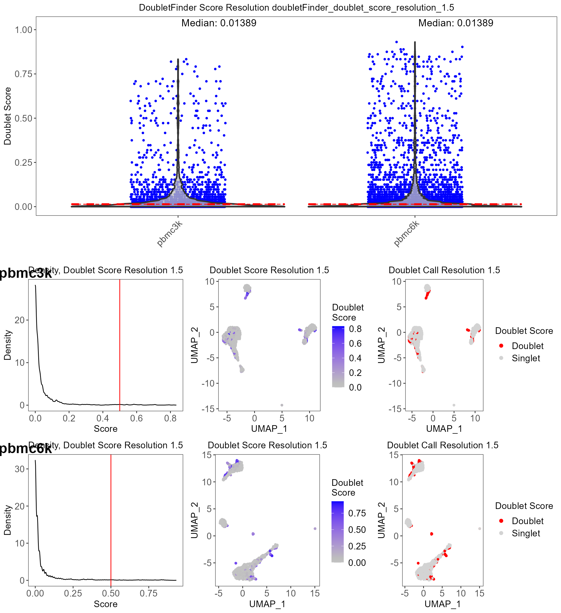
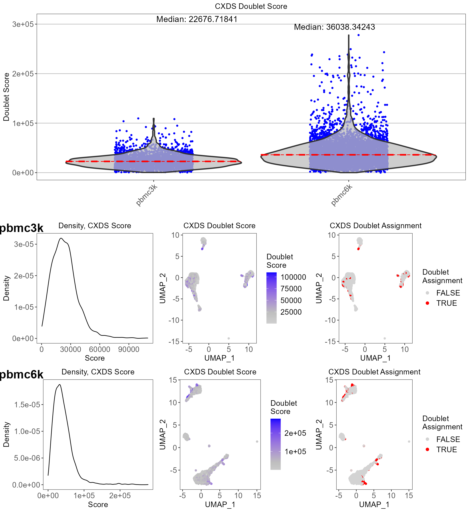
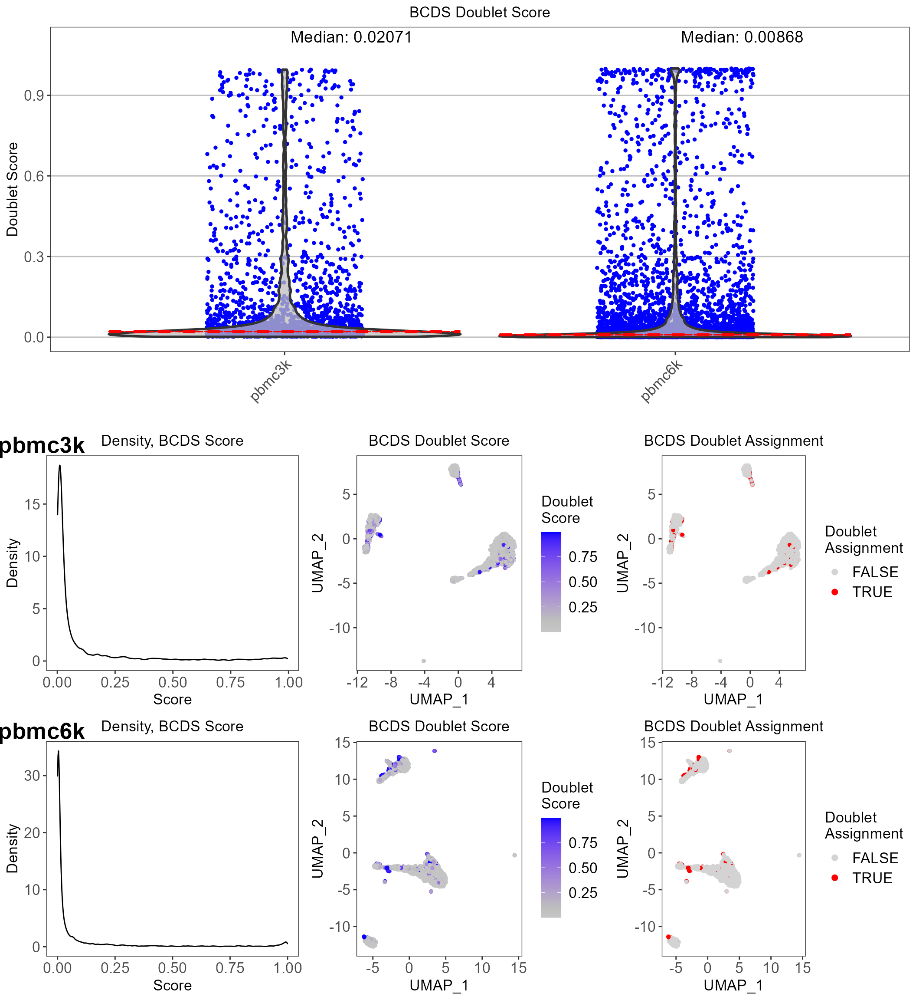
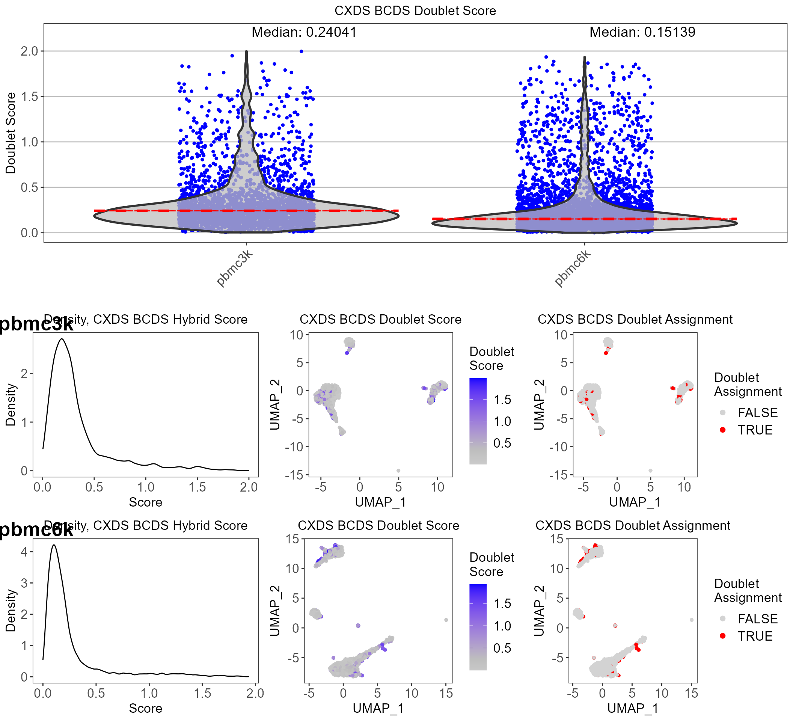
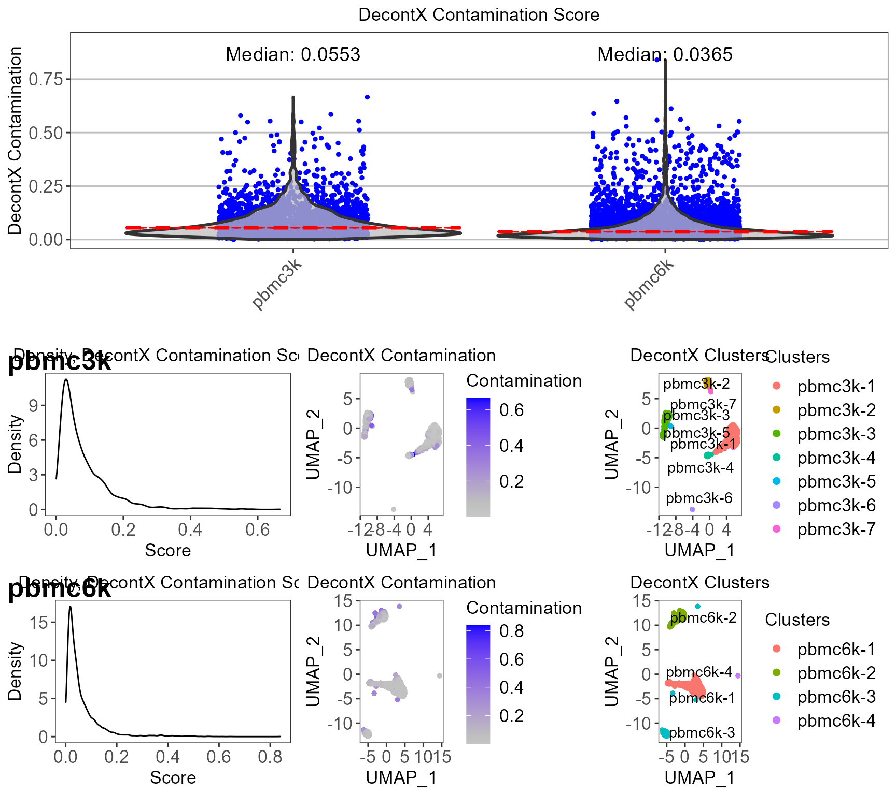

Introduction
Performing comprehensive quality control (QC) is necessary to remove poor quality cells for downstream analysis of single-cell RNA sequencing (scRNA-seq) data. Within droplet-based scRNA-seq data, droplets containing cells must be differentiated from empty droplets. Therefore, assessment of the data is required, for which various QC algorithms have been developed. In singleCellTK, we have written convenience functions for several of these tools. In this guide, we will demonstrate how to use these functions to perform quality control on unfiltered, droplet-level data.
The package can be loaded using the library command.
Running quality control of droplet raw count data with singleCellTK
Load PBMC4k data from 10X
singleCellTK takes in a SingleCellExperiment object from the SingleCellExperiment package. We will utilize the 10X PBMC 4K dataset as an example. For the quality control of droplet-based counts data, we will install the dataset from the 10X Genomics website using the BiocFileCache(https://www.bioconductor.org/packages/release/bioc/html/BiocFileCache.html) package.
# Install BiocFileCache if is it not already
if (!requireNamespace("BiocFileCache", quietly = TRUE)) {
if (!requireNamespace("BiocManager", quietly = TRUE)) {
install.packages("BiocManager")
}
BiocManager::install("BiocFileCache")
}
library("BiocFileCache")
bfc <- BiocFileCache::BiocFileCache("raw_data", ask = FALSE)
raw.path <- bfcrpath(bfc, file.path(
"http://cf.10xgenomics.com/samples",
"cell-exp/2.1.0/pbmc4k/pbmc4k_raw_gene_bc_matrices.tar.gz"
))
untar(raw.path, exdir = file.path(tempdir(), "pbmc4k"))
fname <- file.path(tempdir(), "pbmc4k/raw_gene_bc_matrices/GRCh38")
pbmc4k.droplet <- DropletUtils::read10xCounts(fname, col.names = TRUE)
### change the sample column
names(colData(pbmc4k.droplet)) <- c("sample", "Barcode")
colData(pbmc4k.droplet)$sample <- rep("pbmc4k", ncol(colData(pbmc4k.droplet)))singleCellTK also supports the importing of single-cell data from the following platforms: 10X CellRanger, STARSolo, BUSTools, SEQC, DropEST, and AnnData. To load your own input data, please refer Import data into SCTK for deailed instruction.
runDropletQC
All droplet-based QC functions are able to be run under the wrapper function runDropletQC. By default all possible QC algorithms will be run.
pbmc4k.droplet <- runDropletQC(pbmc4k.droplet)## Thu Apr 01 19:25:40 2021 ... Running 'perCellQCMetrics'## Thu Apr 01 19:25:43 2021 ... Running 'emptyDrops'## Thu Apr 01 19:26:54 2021 ... Running 'barcodeRanks'If users choose to only run a specific set of algorithms, they can specify which to run with the algorithms parameter.
When quality control functions are run in singleCellTK, the output of the function is stored in the colData slot of the SingleCellExperiment object.
head(colData(pbmc4k.droplet), 5)
df.matrix <- head(colData(pbmc4k.droplet), 5)
df.matrix %>%
knitr::kable(format = "html") %>% kableExtra::kable_styling() %>%
kableExtra::scroll_box(width = "80%")| sample | Barcode | sum | detected | percent.top_50 | percent.top_100 | percent.top_200 | percent.top_500 | total | dropletUtils_emptyDrops_total | dropletUtils_emptyDrops_logprob | dropletUtils_emptyDrops_pvalue | dropletUtils_emptyDrops_limited | dropletUtils_emptyDrops_fdr | dropletUtils_BarcodeRank_Knee | dropletUtils_BarcodeRank_Inflection | |
|---|---|---|---|---|---|---|---|---|---|---|---|---|---|---|---|---|
| AAACCTGAGAAACCAT-1 | pbmc4k | AAACCTGAGAAACCAT-1 | 1 | 1 | 100 | 100 | 100 | 100 | 1 | 1 | NA | NA | NA | NA | 0 | 0 |
| AAACCTGAGAAACCGC-1 | pbmc4k | AAACCTGAGAAACCGC-1 | 0 | 0 | NaN | NaN | NaN | NaN | 0 | 0 | NA | NA | NA | NA | 0 | 0 |
| AAACCTGAGAAACCTA-1 | pbmc4k | AAACCTGAGAAACCTA-1 | 1 | 1 | 100 | 100 | 100 | 100 | 1 | 1 | NA | NA | NA | NA | 0 | 0 |
| AAACCTGAGAAACGAG-1 | pbmc4k | AAACCTGAGAAACGAG-1 | 0 | 0 | NaN | NaN | NaN | NaN | 0 | 0 | NA | NA | NA | NA | 0 | 0 |
| AAACCTGAGAAACGCC-1 | pbmc4k | AAACCTGAGAAACGCC-1 | 1 | 1 | 100 | 100 | 100 | 100 | 1 | 1 | NA | NA | NA | NA | 0 | 0 |
A summary of all outputs is shown below:
| QC output | Description | Methods | Package/Tool |
|---|---|---|---|
| dropletUtils_emptyDrops_total | Total counts | runEmptyDrops | DropletUtils |
| dropletUtils_emptyDrops_logprob | The log-probability of droplet being empty | runEmptyDrops | DropletUtils |
| dropletUtils_emptyDrops_pvalue | Monte Carlo p-value of droplet being empty | runEmptyDrops | DropletUtils |
| dropletUtils_emptyDrops_limited | Whether a lower p-value could be obtained by increasing niters | runEmptyDrops | DropletUtils |
| dropletUtils_emptyDrops_fdr | p-value of droplet being empty, corrected for false detection rate | runEmptyDrops | DropletUtils |
| dropletUtils_BarcodeRank_Knee | Whether total UMI count value is higher than knee point | runBarcodeRankDrops | DropletUtils |
| dropletUtils_BarcodeRank_Inflection | Whether total UMI count value is higher than inflection point | runBarcodeRankDrops | DropletUtils |
Plotting QC metrics
Upon running runDropletQC, the QC outputs will need to be plotted. For each QC method, singleCellTK contains specialized plotting functions that may be used for the generation of QC plots.
EmptyDrops
It is crucial to distinguish the data occurring from real cells and empty droplets containing ambient RNA. SCTK employs the EmptyDrops algorithm from the DropletUtils package to test for empty droplets.
The wrapper function plotEmptyDropsResults can be used to plot the results from the EmptyDrops algorithm. This will visualize the empty droplets, by plotting the total UMI counts against the log probability for each barcode.
emptyDropsResults <- plotEmptyDropsResults(
inSCE = pbmc4k.droplet,
axisLabelSize = 20,
sample = NULL,
fdrCutoff = 0.01,
dotSize = 0.5,
defaultTheme = TRUE
)
emptyDropsResults$scatterEmptyDrops
Data points are colored by FDR values, where we see a small portion of the dataset contains barcodes that do not meet the threshold.
BarcodeRanks
BarcodeRanks from the DropletUtils package computes barcode rank statistics and identifies the knee and inflection points on the total count curve. The knee and inflection points on the curve represent the difference between empty droplets and cell-containing droplets with much more RNA. The lower parameter is again the lower bound of the total UMI count, in which all barcodes below the lower bound are assumed to be empty droplets.
plotBarcodeRankScatter(
inSCE = pbmc4k.droplet,
title = "BarcodeRanks Rank Plot",
legendSize = 14
)
The total UMI count of each barcode is plotted against its rank, where we see a steep dropoff of UMI counts around the inflection point, where we see a separation between cell containing and empty droplets.
Filtering the dataset
SingleCellExperiment objects can be subset by its colData using subsetSCECols. The colData parameter takes in an expression in character vector form which will be used to identify a subset of columns using variables found in the colData of the SingleCellExperiment object. For example, if x is a numeric vector in colData, then “x < 5” will return all columns with x less than 5. The index parameter takes in a vector of indices which should be kept, while bool takes in a vector of TRUE or FALSE which should be the same length as the number of columns in the SingleCellExperiment object.
#Before filtering:
dim(pbmc4k.droplet)## [1] 33694 737280
pbmc4k.droplet <- subsetSCECols(pbmc4k.droplet, colData = 'dropletUtils_BarcodeRank_Inflection == 1')
pbmc4k.droplet <- subsetSCECols(pbmc4k.droplet, colData = '!is.na(pbmc4k.droplet$dropletUtils_emptyDrops_fdr)')
pbmc4k.droplet <- subsetSCECols(pbmc4k.droplet, colData = 'pbmc4k.droplet$dropletUtils_emptyDrops_fdr < 0.01')
#After filtering:
dim(pbmc4k.droplet)## [1] 33694 4236We can compare the average total UMI counts per cell before and after cell filtration:
p1 <- plotSCEViolinColData(pbmc4k.droplet.prefilt, coldata = "sum", summary = "mean", title = "Pre-filter", ylab = "Total counts")
p2 <- plotSCEViolinColData(pbmc4k.droplet, coldata = "sum", summary = "mean", title = "Post-filter", ylab = "Total counts")
plot(cowplot::plot_grid(p1, p2, ncol = 2))
For additional cell-filtered quality control with singleCellTK, please refer to “Running quality control of cell-filtered single cell data with singleCellTK”.
Running individual QC methods
Instead of running all quality control methods on the dataset at once, users may elect to execute QC methods individually. The parameters as well as the outputs to individual QC functions are described in detail as follows:
runEmptyDrops
The wrapper function runEmptyDrops can be used to separately run the EmptyDrops algorithm on its own.
In runEmptyDrops, the lower parameter is the lower bound of the total UMI count, in which all barcodes below the lower bound are assumed to be empty droplets. The niters parameter is the number of iterations the function will run for the calculation. testAmbient indicates whether results should be returned for barcodes that have a total UMI count below what is specified in lower.
pbmc4k.droplet <- runEmptyDrops(
inSCE = pbmc4k.droplet,
useAssay = "counts",
lower = 100,
niters = 10000
)runBarcodeRankDrops
The wrapper function runBarcodeRankDrops can be used to separately run the BarcodeRanks algorithm on its own.
The lower parameter is again the lower bound of the total UMI count, in which all barcodes below the lower bound are assumed to be empty droplets.
pbmc4k.droplet <- runBarcodeRankDrops(
inSCE = pbmc4k.droplet,
useAssay = "counts",
fitBounds = NULL, df = 20
)Running quality control of cell-filtered single cell data with singleCellTK
Load PBMC data from 10X
We will use a filtered form of the PBMC 3K and 6K dataset from the package TENxPBMCData, which is available from the importExampleData function. We will combine these datasets together into a single SingleCellExperiment object.
pbmc3k <- importExampleData(dataset = "pbmc3k")
pbmc6k <- importExampleData(dataset = "pbmc6k")
pbmc.combined <- BiocGenerics::cbind(pbmc3k, pbmc6k)
sample.vector = colData(pbmc.combined)$samplesingleCellTK also supports the importing of single-cell data from the following platforms: 10X CellRanger, STARSolo, BUSTools, SEQC, DropEST, and AnnData. To load your own input data, please refer Import data into SCTK for deailed instruction.
Run Dimensionality Reduction
SCTK utilizes dimensionality reduction techniques such as TSNE and UMAP for visualizing single-cell data. The user can modify the dimensions by adjusting the parameters within the function. The logNorm parameter should be set to TRUE for normalization prior to running dimensionality reduction.
The sample parameter may be specified if multiple samples exist in the SingleCellExperiment object. Here, we will use the sample vector stored in the colData of the SingleCellExperiment object.
# UMAP:
pbmc.combined <- getUMAP(inSCE = pbmc.combined, useAssay = "counts", logNorm = TRUE, sample = sample.vector)
# TSNE (not run):
# pbmc <- getTSNE(inSCE=pbmc, useAssay="counts", logNorm = TRUE, sample = colData(pbmc)$sample)runCellQC
All of the droplet-based QC algorithms are able to be run under the wrapper function runCellQC. By default all possible QC algorithms will be run.
Users may set a sample parameter if you would like to compare between multiple samples. Here, we will use the sample vector stored in the SingleCellExperiment object.
If the user wishes, a list of gene sets can be applied to the function to determine the expression of a set of specific genes. A gene list imported into the SingleCellExperiment object using importGeneSets functions can be set as collectionName. Additionally, a pre-made list of genes can be used to determine the level of gene expression per cell. A list containing gene symbols may be set as geneSetList, or the user may instead use the geneSetCollection parameter to supply a GeneSetCollection object from the GSEABase package.
pbmc.combined <- importGeneSetsFromGMT(inSCE = pbmc.combined, collectionName = "mito", file = system.file("extdata/mito_subset.gmt", package = "singleCellTK"))
set.seed(12345)
pbmc.combined <- runCellQC(pbmc.combined, sample = sample.vector, collectionName = "mito")## [1] "Creating 900 artificial doublets..."## Warning: The default method for RunUMAP has changed from calling Python UMAP via reticulate to the R-native UWOT using the cosine metric
## To use Python UMAP via reticulate, set umap.method to 'umap-learn' and metric to 'correlation'
## This message will be shown once per session## [1] "Creating 1806 artificial doublets..."
## [19:40:52] WARNING: amalgamation/../src/learner.cc:1061: Starting in XGBoost 1.3.0, the default evaluation metric used with the objective 'binary:logistic' was changed from 'error' to 'logloss'. Explicitly set eval_metric if you'd like to restore the old behavior.
## [19:41:25] WARNING: amalgamation/../src/learner.cc:1061: Starting in XGBoost 1.3.0, the default evaluation metric used with the objective 'binary:logistic' was changed from 'error' to 'logloss'. Explicitly set eval_metric if you'd like to restore the old behavior.
## [19:41:43] WARNING: amalgamation/../src/learner.cc:1061: Starting in XGBoost 1.3.0, the default evaluation metric used with the objective 'binary:logistic' was changed from 'error' to 'logloss'. Explicitly set eval_metric if you'd like to restore the old behavior.
## [19:42:14] WARNING: amalgamation/../src/learner.cc:1061: Starting in XGBoost 1.3.0, the default evaluation metric used with the objective 'binary:logistic' was changed from 'error' to 'logloss'. Explicitly set eval_metric if you'd like to restore the old behavior.If users choose to only run a specific set of algorithms, they can specify which to run with the algorithms parameter.
When quality control functions are run in singleCellTK, the output of the function is stored in the colData slot of the SingleCellExperiment object.
head(colData(pbmc.combined), 5)| Sample | Barcode | Sequence | Library | Cell_ranger_version | Tissue_status | Barcode_type | Chemistry | Sequence_platform | Individual | Date_published | sample | sum | detected | percent.top_50 | percent.top_100 | percent.top_200 | percent.top_500 | subsets_mito_sum | subsets_mito_detected | subsets_mito_percent | total | scrublet_score | scrublet_call | scDblFinder_sample | scDblFinder_cluster | scDblFinder_class | scDblFinder_doublet_score | scDblFinder_ratio | scDblFinder_weighted | scDblFinder_nearestClass | scDblFinder_difficulty | scDblFinder_cxds_score | scDblFinder_mostLikelyOrigin | scDblFinder_originAmbiguous | doubletFinder_doublet_score_resolution_1.5 | doubletFinder_doublet_label_resolution_1.5 | scds_cxds_score | scds_cxds_call | scds_bcds_score | scds_bcds_call | scds_hybrid_score | scds_hybrid_call | decontX_contamination | decontX_clusters | |
|---|---|---|---|---|---|---|---|---|---|---|---|---|---|---|---|---|---|---|---|---|---|---|---|---|---|---|---|---|---|---|---|---|---|---|---|---|---|---|---|---|---|---|---|---|---|
| pbmc3k_AAACATACAACCAC-1 | pbmc3k | AAACATACAACCAC-1 | AAACATACAACCAC | 1 | v1.1.0 | NA | GemCode | Chromium_v1 | NextSeq500 | HealthyDonor2 | 2016-05-26 | pbmc3k | 2421 | 781 | 47.74886 | 63.27964 | 74.96902 | 88.39323 | 73 | 10 | 3.015283 | 2421 | 0.1606218 | FALSE | pbmc3k | 1 | singlet | 0.5404512 | 0.82 | 0.8295422 | artificialDoublet | 0.1078092 | 0.0248409 | 1+2 | FALSE | 0.0138889 | Singlet | 22794.14 | FALSE | 0.0149839 | FALSE | 0.2109824 | FALSE | 0.0333002 | pbmc3k-1 |
| pbmc3k_AAACATTGAGCTAC-1 | pbmc3k | AAACATTGAGCTAC-1 | AAACATTGAGCTAC | 1 | v1.1.0 | NA | GemCode | Chromium_v1 | NextSeq500 | HealthyDonor2 | 2016-05-26 | pbmc3k | 4903 | 1352 | 45.50275 | 61.02386 | 71.81318 | 82.62288 | 186 | 10 | 3.793596 | 4903 | 0.1147541 | FALSE | pbmc3k | 4 | singlet | 0.2076700 | 0.48 | 0.5434718 | artificialDoublet | 0.0333764 | 0.1137545 | 1+4 | FALSE | 0.1527778 | Singlet | 35689.05 | FALSE | 0.9710556 | TRUE | 0.8471188 | FALSE | 0.1377323 | pbmc3k-2 |
A summary of all outputs is shown below:
| QC output | Description | Methods | Package/Tool |
|---|---|---|---|
| sum | Total counts | runPerCellQC | scater |
| detected | Total features | runPerCellQC | scater |
| percent_top | % Expression coming from top features | runPerCellQC | scater |
| subsets_ | sum, detected, percent_top calculated on specified gene list | runPerCellQC | scater |
| scrublet_score | Doublet score | runScrublet | scrublet |
| scrublet_call | Doublet classification based on threshold | runScrublet | scrublet |
| scDblFinder_doublet_score | Doublet score | runScDblFinder | scran |
| doubletFinder_doublet_score | Doublet score | runDoubletFinder | DoubletFinder |
| doubletFinder_doublet_label_resolution | Doublet classification based on threshold | runDoubletFinder | DoubletFinder |
| scds_cxds_score | Doublet score | runCxds | SCDS |
| scds_cxds_call | Doublet classification based on threshold | runCxds | SCDS |
| scds_bcds_score | Doublet score | runBcds | SCDS |
| scds_bcds_call | Doublet classification based on threshold | runBcds | SCDS |
| scds_hybrid_score | Doublet score | runCxdsBcdsHybrid | SCDS |
| scds_hybrid_call | Doublet classification based on threshold | runCxdsBcdsHybrid | SCDS |
| decontX_contamination | Ambient RNA contamination | runDecontX | celda |
| decontX_clusters | Clusters determined in dataset based on underlying algorithm | runDecontX | celda |
The names of the reducedDims of the SingleCellExperiment object are stored in the reducedDims slot.
reducedDims(pbmc.combined)## List of length 6
## names(6): UMAP scrublet_TSNE ... decontX_pbmc3k_UMAP decontX_pbmc6k_UMAPPlotting QC metrics
Upon running runCellQC, the QC outputs will need to be plotted. For each QC method, singleCellTK contains specialized plotting functions that may be used for the generation of QC plots.
General QC metrics
runPerCellQC
SingleCellTK utilizes the scater package to compute cell-level QC metrics.
The wrapper function plotRunPerCellQCResults can be used to plot the general QC outputs.
runpercellqc.results <- plotRunPerCellQCResults(inSCE = pbmc.combined, sample = sample.vector, combinePlot = "all", axisSize = 8, axisLabelSize = 9, titleSize = 20)
runpercellqc.results
Doublet detection
Doublets hinder cell-type identification by appearing as a distinct transcriptomic state, and need to be removed for downstream analysis. singleCellTK contains various doublet detection tools that the user may choose from.
Scrublet
Scrublet aims to detect doublets by creating simulated doublets from combining transcriptomic profiles of existing cells in the dataset.
The wrapper function plotScrubletResults can be used to plot the results from the Scrublet algorithm.
The names of the reducedDims of the SingleCellExperiment object are stored in the reducedDims slot. Here, we will use the UMAP coordinates generated from getUMAP above.
reducedDims(pbmc.combined)## List of length 6
## names(6): UMAP scrublet_TSNE ... decontX_pbmc3k_UMAP decontX_pbmc6k_UMAP
scrublet.results <- plotScrubletResults(
inSCE = pbmc.combined,
reducedDimName = "UMAP",
sample = colData(pbmc.combined)$sample,
combinePlot = "all",
titleSize = 13,
axisLabelSize = 13,
axisSize = 13,
legendSize = 13,
legendTitleSize = 13
)
scrublet.results 
ScDblFinder
ScDblFinder is a doublet detection algorithm. ScDblFinder aims to detect doublets by creating a simulated doublet from existing cells and projecting it to the same PCA space as the cells.
The wrapper function plotScDblFinderResults can be used to plot the QC outputs from the ScDblFinder algorithm.
scDblFinder.results <- plotScDblFinderResults(
inSCE = pbmc.combined, sample = colData(pbmc.combined)$sample,
reducedDimName = "UMAP", combinePlot = "all",
titleSize = 13,
axisLabelSize = 13,
axisSize = 13,
legendSize = 13,
legendTitleSize = 13
)
scDblFinder.results
DoubletFinder
DoubletFinder is a doublet detection algorithm which depends on the single cell analysis package Seurat.
The wrapper function plotDoubletFinderResults can be used to plot the QC outputs from the DoubletFinder algorithm.
doubletFinderResults <- plotDoubletFinderResults(
inSCE = pbmc.combined,
sample = colData(pbmc.combined)$sample,
reducedDimName = "UMAP",
combinePlot = "all",
titleSize = 13,
axisLabelSize = 13,
axisSize = 13,
legendSize = 13,
legendTitleSize = 13
)
doubletFinderResults 
SCDS, CXDS
CXDS, or co-expression based doublet scoring, is an algorithm in the SCDS package which employs a binomial model for the co-expression of pairs of genes to determine doublets.
The wrapper function plotCxdsResults can be used to plot the QC outputs from the CXDS algorithm.
cxdsResults <- plotCxdsResults(
inSCE = pbmc.combined,
sample = colData(pbmc.combined)$sample,
reducedDimName = "UMAP", combinePlot = "all",
titleSize = 13,
axisLabelSize = 13,
axisSize = 13,
legendSize = 13,
legendTitleSize = 13
)
cxdsResults
SCDS, BCDS
BCDS, or binary classification based doublet scoring, is an algorithm in the SCDS package which uses a binary classification approach to determine doublets.
The wrapper function plotBCDSResults can be used to plot the QC outputs from the BCDS algorithm
bcdsResults <- plotBcdsResults(
inSCE = pbmc.combined,
sample = colData(pbmc.combined)$sample,
reducedDimName = "UMAP", combinePlot = "all",
titleSize = 13,
axisLabelSize = 13,
axisSize = 13,
legendSize = 13,
legendTitleSize = 13
)
bcdsResults
SCDS, CXDS-BCDS hybrid
The CXDS-BCDS hybrid algorithm, uses both CXDS and BCDS algorithms from the SCDS package.
The wrapper function plotScdsHybridResults can be used to plot the QC outputs from the CXDS-BCDS hybrid algorithm.
bcdsCxdsHybridResults <- plotScdsHybridResults(
inSCE = pbmc.combined, sample = colData(pbmc.combined)$sample,
reducedDimName = "UMAP", combinePlot = "all",
titleSize = 13,
axisLabelSize = 13,
axisSize = 13,
legendSize = 13,
legendTitleSize = 13
)
bcdsCxdsHybridResults
Ambient RNA detection
DecontX
In droplet-based single cell technologies, ambient RNA that may have been released from apoptotic or damaged cells may get incorporated into another droplet, and can lead to contamination. decontX, available from the celda, is a Bayesian method for the identification of the contamination level at a cellular level.
The wrapper function plotDecontXResults can be used to plot the QC outputs from the DecontX algorithm.
decontxResults <- plotDecontXResults(
inSCE = pbmc.combined, sample = colData(pbmc.combined)$sample,
reducedDimName = "UMAP", combinePlot = "all",
titleSize = 13,
axisLabelSize = 13,
axisSize = 13,
legendSize = 13,
legendTitleSize = 13
)
decontxResults
Filtering the dataset
SingleCellExperiment objects can be subset by its colData using subsetSCECols. The usage of each argument is described in the Quality Control of Droplet Counts Data section above.
#Before filtering:
dim(pbmc.combined)## [1] 32738 8119Remove barcodes with high mitochondrial gene expression:
pbmc.combined <- subsetSCECols(pbmc.combined, colData = 'subsets_mito_percent < 20')Remove detected doublets from Scrublet:
pbmc.combined <- subsetSCECols(pbmc.combined, colData = 'scrublet_call == FALSE')Remove cells with high levels of ambient RNA contamination:
pbmc.combined <- subsetSCECols(pbmc.combined, colData = 'decontX_contamination < 0.5')
#After filtering:
dim(pbmc.combined)## [1] 32738 7937Running individual QC methods
Instead of running all quality control methods on the dataset at once, users may elect to execute QC methods individually. The parameters as well as the outputs to individual QC functions are described in detail as follows:
runPerCellQC
The wrapper function runPerCellQC can be used to separately compute QC metrics on its own.
In this function, the inSCE parameter is the input SingleCellExperiment object, while the useAssay parameter is the assay object that in the SingleCellExperiment object the user wishes to use.
If the user wishes, a list of gene sets can be applied to the function to determine the expression of a set of specific genes. A gene list imported into the SingleCellExperiment object using importGeneSets functions can be set as collectionName. Additionally, a pre-made list of genes can be used to determine the level of gene expression per cell. A list containing gene symbols may be set as geneSetList, or the user may instead use the geneSetCollection parameter to supply a GeneSetCollection object from the GSEABase package.
The QC outputs are sum, detected, and percent_top_X.
sum contains the total number of counts for each cell.
detected contains the total number of features for each cell.
percent_top_X contains the percentage of the total counts that is made up by the expression of the top X genes for each cell.
The subsets_ columns contain information for the specific gene list that was used. For instance, if a gene list containing mitochondrial genes named mito was used, subsets_mito_sum would contains the total number of mitochondrial counts for each cell.
pbmc.combined <- runPerCellQC(
inSCE = pbmc.combined,
useAssay = "counts",
collectionName = "mito")runScrublet
The wrapper function runScrublet can be used to separately run the Scrublet algorithm on its own.
The sample parameter indicates what sample each cell originated from. It can be set to NULL if all cells in the dataset came from the same sample.
Scrublet also has a large set of parameters that the user can adjust; please refer to the Scrublet website for more details.
The Scrublet outputs are scrublet_score, which is a numeric variable of the likelihood that a cell is a doublet, and the scrublet_label, which is the assignment of whether the cell is a doublet.
pbmc.combined <- runScrublet(
inSCE = pbmc.combined,
sample = colData(pbmc.combined)$sample,
useAssay = "counts"
)runScDblFinder
The wrapper function runBarcodeRankDrops can be used to separately run the ScDblFinder algorithm on its own. The nNeighbors parameter is the number of nearest neighbor used to calculate the density for doublet detection. simDoublets is used to determine the number of simulated doublets used for doublet detection.
The output of ScDblFinder is a scDblFinder_doublet_score. The doublet score of a droplet will be higher if the it is deemed likely to be a doublet.
pbmc.combined <- runScDblFinder(inSCE = pbmc.combined, sample = colData(pbmc.combined)$sample, useAssay = "counts")runDoubletFinder
The wrapper function runDoubletFinder can be used to separately run the DoubletFinder algorithm on its own. runDoubletFinder relies on a parameter (in Seurat) called resolution to determine cells that may be doublets. Users will be able to manipulate the resolution parameter through seuratRes. If multiple numeric vectors are stored in seuratRes, there will be multiple label/scores. The seuratNfeatures parameter determines the number of features that is used in the FindVariableFeatures function in Seurat. seuratPcs parameter determines the number of dimensions used in the FindNeighbors function in Seurat. The formationRate parameter is the estimated doublet detection rate in the dataset. aims to detect doublets by creating simulated doublets from combining transcriptomic profiles of existing cells in the dataset.
The DoubletFinder outputs are doubletFinder_doublet_score, which is a numeric variable of the likelihood that a cell is a doublet, and the doubletFinder_doublet_label, which is the assignment of whether the cell is a doublet.
pbmc.combined <- runDoubletFinder(
inSCE = pbmc.combined, useAssay = "counts",
sample = colData(pbmc.combined)$sample,
seuratRes = c(1.0), seuratPcs = 1:15,
seuratNfeatures = 2000,
formationRate = 0.075, seed = 12345
)runCXDS
The wrapper function runCxds can be used to separately run the CXDS algorithm on its own. In runCxds, the ntop parameter is the number of top variance genes to consider. The binThresh parameter is the minimum counts a gene needs to have to be included in the analysis. verb determines whether progress messages will be displayed or not. retRes will determine whether the gene pair results should be returned or not. The user may set the estimated number of doublets with estNdbl.
The output of runCxds is the doublet score, scds_cxds_score.
pbmc.combined <- runCxds(
inSCE = pbmc.combined, sample = colData(pbmc.combined)$sample,
ntop = 500, binThresh = 0,
verb = FALSE, retRes = FALSE, estNdbl = FALSE
)runBCDS
The wrapper function runBcds can be used to separately run the BCDS algorithm on its own. In runBcds, the ntop parameter is the number of top variance genes to consider. The srat parameter is the ratio between original number of cells and simulated doublets. The nmax parameter is the maximum number of cycles that the algorithm should run through. If set to tune, this will be automatic. The varImp parameter determines if the variable importance should be returned or not.
The output of runBcds is scds_bcds_score, which is the likelihood that a cell is a doublet.
pbmc.combined <- runBcds(
inSCE = pbmc.combined, seed = 12345, sample = colData(pbmc.combined)$sample,
ntop = 500, srat = 1, nmax = "tune", varImp = FALSE
)runCxdsBcdsHybrid
The wrapper function runCxdsBcdsHybrid can be used to separately run the CXDS-BCDS hybrid algorithm on its own.
All parameters from the runBCDS and runBCDS functions may be applied to this function in the cxdsArgs and bcdsArgs parameters, respectively. The output of runCxdsBcdsHybrid is the doublet score, scds_hybrid_score.
pbmc.combined <- runCxdsBcdsHybrid(
inSCE = pbmc.combined, sample = colData(pbmc.combined)$sample,
seed = 12345, nTop = 500
)runDecontX
The outputs of runDecontX are decontX_contamination and decontX_clusters.
The wrapper function runDecontX can be used to separately run the DecontX algorithm on its own. decontX_contamination is a numeric vector which characterizes the level of contamination in each cell. Clustering is performed as part of the runDecontX algorithm. decontX_clusters is the resulting cluster assignment, which can also be labeled on the plot.
pbmc.combined <- runDecontX(pbmc.combined, sample = colData(pbmc.combined)$sample, useAssay = "counts")Session Information
## R version 4.0.4 (2021-02-15)
## Platform: x86_64-w64-mingw32/x64 (64-bit)
## Running under: Windows 10 x64 (build 19042)
##
## Matrix products: default
##
## locale:
## [1] LC_COLLATE=Chinese (Simplified)_China.936
## [2] LC_CTYPE=Chinese (Simplified)_China.936
## [3] LC_MONETARY=Chinese (Simplified)_China.936
## [4] LC_NUMERIC=C
## [5] LC_TIME=Chinese (Simplified)_China.936
##
## attached base packages:
## [1] parallel stats4 stats graphics grDevices utils datasets
## [8] methods base
##
## other attached packages:
## [1] TENxPBMCData_1.8.0 HDF5Array_1.18.1
## [3] rhdf5_2.34.0 BiocFileCache_1.14.0
## [5] dbplyr_2.1.0 dplyr_1.0.5
## [7] singleCellTK_2.0.0 DelayedArray_0.16.2
## [9] Matrix_1.3-2 SingleCellExperiment_1.12.0
## [11] SummarizedExperiment_1.20.0 Biobase_2.50.0
## [13] GenomicRanges_1.42.0 GenomeInfoDb_1.26.2
## [15] IRanges_2.24.1 S4Vectors_0.28.1
## [17] BiocGenerics_0.36.0 MatrixGenerics_1.2.1
## [19] matrixStats_0.58.0
##
## loaded via a namespace (and not attached):
## [1] MCMCprecision_0.4.0 rappdirs_0.3.3
## [3] scds_1.6.0 scattermore_0.7
## [5] R.methodsS3_1.8.1 SeuratObject_4.0.0
## [7] ragg_1.1.1 tidyr_1.1.3
## [9] ggplot2_3.3.3 bit64_4.0.5
## [11] knitr_1.31 irlba_2.3.3
## [13] R.utils_2.10.1 data.table_1.14.0
## [15] rpart_4.1-15 doParallel_1.0.16
## [17] RCurl_1.98-1.2 generics_0.1.0
## [19] cowplot_1.1.1 RSQLite_2.2.3
## [21] combinat_0.0-8 RANN_2.6.1
## [23] future_1.21.0 bit_4.0.4
## [25] spatstat.data_2.0-0 webshot_0.5.2
## [27] xml2_1.3.2 httpuv_1.5.5
## [29] assertthat_0.2.1 viridis_0.5.1
## [31] xfun_0.21 jquerylib_0.1.3
## [33] evaluate_0.14 promises_1.2.0.1
## [35] fansi_0.4.2 assertive.files_0.0-2
## [37] igraph_1.2.6 DBI_1.1.1
## [39] htmlwidgets_1.5.3 purrr_0.3.4
## [41] ellipsis_0.3.1 RSpectra_0.16-0
## [43] annotate_1.68.0 deldir_0.2-10
## [45] sparseMatrixStats_1.2.1 vctrs_0.3.6
## [47] ROCR_1.0-11 abind_1.4-5
## [49] RcppEigen_0.3.3.9.1 cachem_1.0.4
## [51] withr_2.4.1 GSVAdata_1.26.0
## [53] sctransform_0.3.2 scran_1.18.5
## [55] goftest_1.2-2 svglite_2.0.0
## [57] cluster_2.1.0 ExperimentHub_1.16.0
## [59] dotCall64_1.0-1 lazyeval_0.2.2
## [61] crayon_1.4.1 edgeR_3.32.1
## [63] pkgconfig_2.0.3 labeling_0.4.2
## [65] nlme_3.1-152 vipor_0.4.5
## [67] rlang_0.4.10 globals_0.14.0
## [69] lifecycle_1.0.0 miniUI_0.1.1.1
## [71] dbscan_1.1-6 enrichR_3.0
## [73] rsvd_1.0.3 AnnotationHub_2.22.0
## [75] rprojroot_2.0.2 polyclip_1.10-0
## [77] lmtest_0.9-38 graph_1.68.0
## [79] Rhdf5lib_1.12.1 zoo_1.8-8
## [81] beeswarm_0.3.1 ggridges_0.5.3
## [83] rjson_0.2.20 png_0.1-7
## [85] viridisLite_0.3.0 bitops_1.0-6
## [87] R.oo_1.24.0 KernSmooth_2.23-18
## [89] spam_2.6-0 rhdf5filters_1.2.0
## [91] pROC_1.17.0.1 blob_1.2.1
## [93] DelayedMatrixStats_1.12.3 stringr_1.4.0
## [95] parallelly_1.23.0 gridGraphics_0.5-1
## [97] beachmat_2.6.4 scales_1.1.1
## [99] memoise_2.0.0 GSEABase_1.52.1
## [101] magrittr_2.0.1 plyr_1.8.6
## [103] ica_1.0-2 zlibbioc_1.36.0
## [105] compiler_4.0.4 dqrng_0.2.1
## [107] kableExtra_1.3.4 RColorBrewer_1.1-2
## [109] fitdistrplus_1.1-3 XVector_0.30.0
## [111] listenv_0.8.0 patchwork_1.1.1
## [113] pbapply_1.4-3 MASS_7.3-53
## [115] mgcv_1.8-33 tidyselect_1.1.0
## [117] MAST_1.16.0 stringi_1.5.3
## [119] textshaping_0.3.1 highr_0.8
## [121] yaml_2.2.1 assertive.numbers_0.0-2
## [123] BiocSingular_1.6.0 locfit_1.5-9.4
## [125] ggrepel_0.9.1 grid_4.0.4
## [127] sass_0.3.1 tools_4.0.4
## [129] future.apply_1.7.0 rstudioapi_0.13
## [131] foreach_1.5.1 bluster_1.0.0
## [133] celda_1.6.1 gridExtra_2.3
## [135] assertive.types_0.0-3 farver_2.1.0
## [137] Rtsne_0.15 DropletUtils_1.10.3
## [139] digest_0.6.27 BiocManager_1.30.10
## [141] FNN_1.1.3 shiny_1.6.0
## [143] Rcpp_1.0.6 scuttle_1.0.4
## [145] BiocVersion_3.12.0 later_1.1.0.1
## [147] RcppAnnoy_0.0.18 httr_1.4.2
## [149] AnnotationDbi_1.52.0 assertive.properties_0.0-4
## [151] colorspace_2.0-0 rvest_0.3.6
## [153] XML_3.99-0.5 fs_1.5.0
## [155] tensor_1.5 reticulate_1.18
## [157] splines_4.0.4 fields_11.6
## [159] uwot_0.1.10 statmod_1.4.35
## [161] spatstat.utils_2.1-0 pkgdown_1.6.1
## [163] scater_1.18.6 xgboost_1.3.2.1
## [165] plotly_4.9.3 systemfonts_1.0.1
## [167] xtable_1.8-4 assertive.base_0.0-9
## [169] jsonlite_1.7.2 spatstat_1.64-1
## [171] R6_2.5.0 pillar_1.5.1
## [173] htmltools_0.5.1.1 mime_0.10
## [175] glue_1.4.2 fastmap_1.1.0
## [177] BiocParallel_1.24.1 BiocNeighbors_1.8.2
## [179] interactiveDisplayBase_1.28.0 codetools_0.2-18
## [181] maps_3.3.0 utf8_1.1.4
## [183] lattice_0.20-41 bslib_0.2.4
## [185] tibble_3.1.0 multipanelfigure_2.1.2
## [187] curl_4.3 ggbeeswarm_0.6.0
## [189] leiden_0.3.7 scDblFinder_1.4.0
## [191] magick_2.6.0 survival_3.2-7
## [193] limma_3.46.0 rmarkdown_2.7
## [195] desc_1.3.0 munsell_0.5.0
## [197] GenomeInfoDbData_1.2.4 iterators_1.0.13
## [199] reshape2_1.4.4 gtable_0.3.0
## [201] Seurat_4.0.0